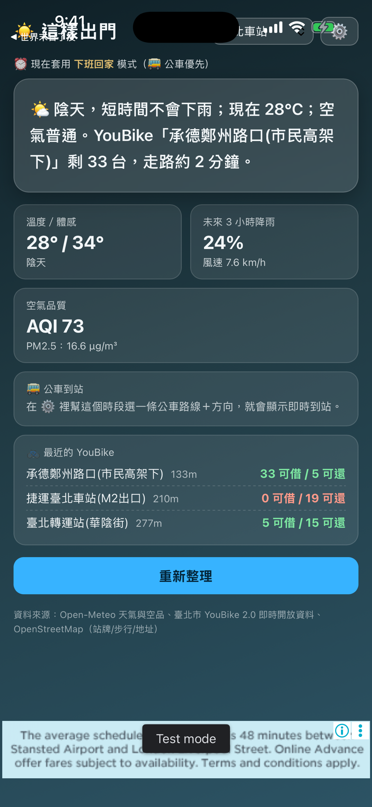

同時查看溫度、降雨與體感資訊，先決定衣著與是否帶傘。
生活 APP · INTRODUCTION
這樣出門
出門以前，一頁看懂今天該怎麼走。
整合天氣、空氣品質、YouBike 與公車資訊，將分散的即時資料整理成清楚的出門建議。

把功能留在
真正需要的時刻。
整合天氣、空氣品質、YouBike 與公車資訊，將分散的即時資料整理成清楚的出門建議。
用清楚等級呈現 AQI 狀況，安排戶外活動前更容易判斷。
掌握附近站點的可借車與可還車數量，降低到了才撲空的機會。
把常用交通資訊放在同一頁，減少出門前反覆切換 App。
RECOVERED COMPLETE GUIDE一個畫面，
一個畫面，
六種即時判斷。
原始介紹網站的完整資訊已恢復。最重要的結論先說，天氣、空氣品質與交通細節需要時再看，不必在多個 App 之間反覆切換。
一句話出門建議
先告訴你會不會下雨、體感如何，以及現在比較適合步行、騎車或搭公車。
即時天氣與降雨
同時查看目前溫度、體感、天氣狀況、風速，以及未來三小時降雨機率。
空氣品質
AQI 與 PM2.5 直接顯示在首頁，出門運動、帶小孩或長輩時更好判斷。
最近的 YouBike
找到附近站點、距離、可借車輛與可還空位，出門前就知道哪一站最適合。
公車即時到站
選好路線、方向與上下車站後，App 會顯示最符合你時段的即時到站資訊。
位置與站點地圖
可使用目前位置，也能手動切換地點；選站時直接從地圖找到真正的站牌。
第一次使用，只要三分鐘設定一次，
設定一次，
之後就是你的行程。
允許定位、選擇常用交通方式，再把上班與下班時段存好。之後 App 會自動套用最合適的資訊。
選擇地點
使用目前位置，或從常用地點選擇你準備出發的區域。
建立出門時段
例如早上出門 06:00–10:00，以及下班回家 17:00–20:00。
指定交通方式
每個時段可個別選 YouBike 或公車，並設定借還車站或公車路線。
儲存並套用
回到首頁按重新整理，App 就會把天氣與交通整合成即時建議。

依時段自動切換
多個出門時段
交通設定分開保存
站點異常提醒
早上想騎車，晚上想搭公車，App 會記得。
每個時段都有自己的交通方式與站點。時間一到，首頁自動切換，不必每天重新選。
可依生活節奏新增早上、下班或其他常用時段。
YouBike 與公車各自記住借還車站、路線與方向。
站點資料異常時會提醒重新選擇，避免沿用失效設定。
通勤小工具公車多久到、
公車多久到、
單車剩幾台。
不用打開 App，也能快速查看通勤資訊。公車模式顯示路線、上車站與到站分鐘；YouBike 模式顯示借車數與還車空位。
公車模式
顯示路線、上車站，以及幾分鐘後到站；即將抵達時會顯示「進站中」。
YouBike 模式
顯示借車站剩餘幾台，以及還車站剩餘幾個空位。
資料透明，選擇留在你手上
天氣與空氣品質使用 Open-Meteo，交通資訊使用政府開放資料與 OpenStreetMap。App 的建議是輔助判斷，重要行程仍建議查看官方公告。
免費使用，不鎖功能
天氣、空氣品質、公車、YouBike 與通勤小工具等核心功能都能免費使用。
常見問題使用前，
使用前，
可能會想知道。
定位可選擇、資料可更新，雙平台都能使用；實際營運狀況仍以現場與官方公告為準。
一定要開啟定位嗎？
不一定。開啟定位可以自動取得附近天氣與交通資訊，你也可以手動選擇地點。
公車與 YouBike 資訊多久更新？
首頁會讀取即時開放資料，並可隨時按「重新整理」取得最新結果；實際營運仍以現場與官方公告為準。
支援哪些平台？
這樣出門提供 iOS 與 Android 版本，部分小工具樣式會依平台略有不同。
完整商店
宣傳圖集。
依照商店目前提供的宣傳素材完整排列；圖片維持原始比例，在手機上會自動換行，不再裁切主要畫面。


使用以前，
值得知道。
這些提醒協助你理解資料界線、平台狀態與合適的使用方式。
建議而非保證
即時資料可能受來源延遲影響，重要行程請預留交通與天候變化時間。
定位用途
位置資訊用來提供附近天氣、站點與交通內容。
平台狀態
Google Play 已提供下載，iOS 1.1 正在等待 Apple 審查。